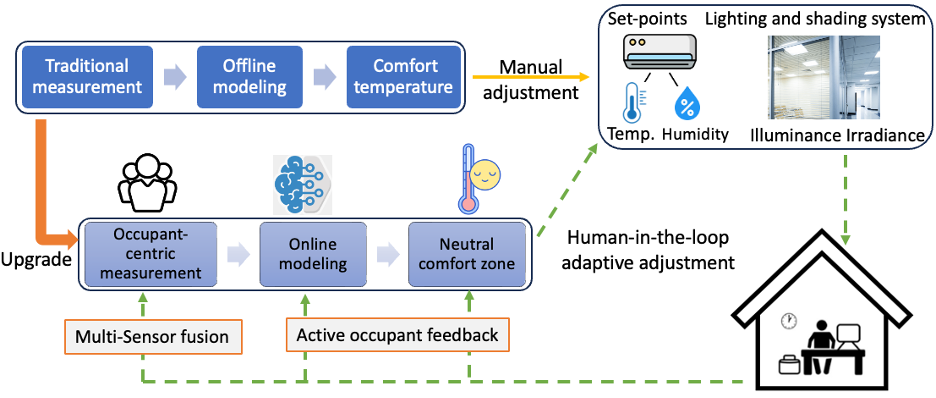

AI-enhanced Digital Twin for Indoor Thermal Simulation and Energy-efficient Control, PI, $50,000

Multisensory Interaction Monitoring and Smart Control
Human-In-The-Loop Multisensory Interaction Analysis and Smart Buildings
Investigation of building resilience and energy efficiency under extreme climatic conditions
Quantifying resilience and framework development
Digital twins, data fusion, and ergonomics-driven research in built environment
Digital twin and data fusion for smart buildings
Digital twin and ergonomics application for workplace safety